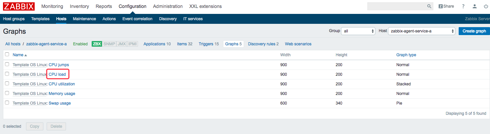

原文连接:https://www.cnblogs.com/bolingcavalry/p/11597352.html
在上一章《Docker下实战zabbix三部曲之一：极速体验》中，我们快速安装了zabbix server，并登录管理页面查看了zabbix server所在机器的监控信息，但是在实际场景中，应该是对应用服务器做监控，所以今天我们来实战将应用服务器的监控加入到zabbix server中。
全系列文章链接：
部署情况
假设实际项目中我们有两台应用服务器，为了监控它们，我们要在上面分别安装zabbix-agent服务，然后通过配置让它们与zabbix server连接，所有监控数据和监控配置数据都被zabbix server保存在mysql中，部署情况如下图：
真实场景中是在应用服务器上安装zabbix agent服务，但是安装agent的过程和步骤不是本次实践的重点，为了快速体验服务本文使用了zabbix官方的agent镜像，这个镜像实际上就是在ubuntu14上安装了zabbix agent（在服务器上安装zabbix agent的过程就不在本文中详述了，对安装有兴趣的读者们可以去网上搜索相关资料）
docker-compose.yml文件
按照前面图片所示的部署情况，我们的docker-compose.yml内容如下，mysql和zabbix server是必须的，再新增了两个zabbix agent容器，名称分别是zabbix-agent-a和zabbix-agent-b：
version: '2'
services:
zabbix-mysql-service:
image: daocloud.io/library/mysql:8
container_name: zabbix-mysql-service
environment:
- MYSQL_ROOT_PASSWORD=888888
restart: always
zabbix-server-service:
image: monitoringartist/zabbix-xxl:3.2.6
links:
- zabbix-mysql-service:mysqlhost
container_name: zabbix-server-service
restart: always
depends_on:
- zabbix-mysql-service
ports:
- "8888:80"
environment:
- ZS_DBHost=mysqlhost
- ZS_DBUser=root
- ZS_DBPassword=888888
zabbix-agent-a:
image: zabbix/zabbix-agent:ubuntu-3.2.6
links:
- zabbix-server-service:zabbixserverhost
container_name: zabbix-agent-a
restart: always
depends_on:
- zabbix-server-service
environment:
- ZBX_HOSTNAME=zabbix-agent-service-a
- ZBX_SERVER_HOST=zabbixserverhost
zabbix-agent-b:
image: zabbix/zabbix-agent:ubuntu-3.2.6
links:
- zabbix-server-service:zabbixserverhost
container_name: zabbix-agent-b
restart: always
depends_on:
- zabbix-server-service
environment:
- ZBX_HOSTNAME=zabbix-agent-service-b
- ZBX_SERVER_HOST=zabbixserverhost如上所示，zabbix agent在配置过程中要用到zabbix server的ip信息，这里我们通过links参数，在zabbix agent的host文件中加入了zabbix server的ip信息，host name是zabbixserverhost；
另外，ZBX_HOSTNAME和ZBX_SERVER_HOST这两个环境变量，在zabbix agent镜像的官方文档中已经说明，如下图，ZBX_HOSTNAME用来表示自己的身份，ZBX_SERVER_HOST是用来标明zabbix server的ip信息的，这里直接用link参数中的alias来表示，就能通过host直接找到zabbix server的ip了：

启动docker 容器
打开控制台，在docker-compose.yml文件所在的目录下执行命令docker-compose up -d，如图：
进入控制台
等待大约1分钟，让zabbix server完成初始化，然后就能登录管理页面了，详情请参照《Docker下实战zabbix三部曲之一：极速体验》一文，登录后进入hosts页面，如下图：
获取监控机器ip
按照前面的部署描述图上的部署，有两台机器装了zabbix agent服务，然后想要加入监控，第一步我们要把机器的ip确定下来，在控制台执行docker exec -it zabbix-agent-a ip addr命令，可以看到如下输出，第一台机器的ip是172.31.0.4：
在控制台执行docker exec -it zabbix-agent-b ip addr命令，可以看到如第二台机器的ip是172.31.0.5；
添加机器监控
点击hosts页面右上角的Create host按钮，可以添加监控机器，如下图：
在添加机器的页面，主要参数填写如下：
a. Host name ：机器的环境变量ZBX_HOSTNAME的值：zabbix-agent-service-a；
b. Visible name ：和Host name的值相同；
c. Groups : 机器分组，这里选择Linux servers；
d. Agent interfaces：这里面只需要填写IP address，就是刚才我们通过命令docker exec -it zabbix-agent-a ip addr得到的ip：172.31.0.4；
这个页面只需要填写以上四点内容，其他的都保持默认值，填写完毕后点击底部的"Add"按钮，如下图：
增加成功后，在列表中可以看到新增的机器，如下图：
添加监控项
在机器列表页面中，点击机器名称，如下图红框中位置：
在打开的页面点击"Templates"，如下图红框所示：
再点击"Select"按钮，如下图红框所示：
在弹出的页面中，勾选“Template OS Linux”，然后再点击底部的“Select”按钮，这样就把linux服务的常用监控项给批量添加了，如下图：
注意，返回的页面中，一定要点击“Add”才能让把刚才的选择加上，如下图：
然后点击“Update”，完成监控项的批量添加，如下图：
按照同样的方法把另一台机器的监控也加上；
等待大约1-2分钟后，再刷新hosts页面，就能看到列表中的"ZBX"图标已经变为绿色，表示监控已经生效；
查看监控信息
我们来看看监控曲线图吧，点击下图红框中的“Graphs”：
可以看到有5个曲线图可以查看，如下图，我们看一下cpu load：

在跳转的页面中，点击“Previdew”，就能看到cpu load的曲线图了，如下图：
至此，我们添加监控机器的实战已经完成了，但是在真实场景中，我们除了cpu、磁盘等基础信息的监控，还要监控一些业务有关的数据，例如某个http服务每分钟的访问量，在下一章《Docker下实战zabbix三部曲之三：自定义监控项》，我们一起实战开发一个自定义监控。
欢迎关注我的公众号